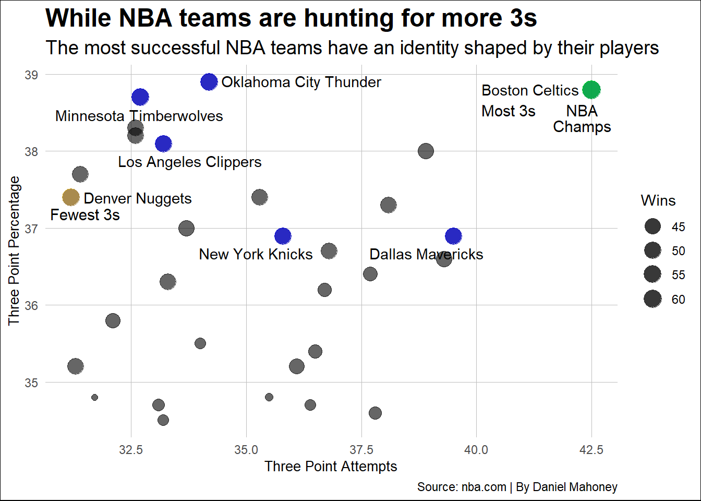

Did Steph Curry and the Golden State Warriors Really Change the NBA?
basketball
nba
steph
Author
Daniel Mahoney
Published
December 3, 2024
The biggest change in the last decade is the amount of threes NBA teams are taking. Before, 3-pointers were not the way NBA teams won games, but now if you want to win most teams look to outscore their opponent from 3.
Even though it has been proven that you can win an NBA championship by being reliant on hitting 3s. There are NBA fans that hate this style of play and believe the NBA is unwatchable.
NBA analysts believe Stephen Curry and the Golden State Warriors are to blame for this 3-point revolution. As they were the first NBA team to win an NBA championship in 2015 by being a 3-point heavy team. To add on to that their star back court duo were given the nickname the “Splash Brothers” because of how good they were at hitting shots from 3.
Yet, I believe there is another player and team that changed the NBA.
That is James Harden and the Houston Rockets, the Golden State Warriors biggest competitor during the years 2015-2019.
You probably think I am crazy, you probably think there is no way the Houston Rockets shot as many or even more threes than the Golden State Warriors, but trust me you will be surprised.
Here is a facet wrap comparing the number of 3-pointers attempted by both the Golden State Warriors and the Houston Rockets from 2014 to 2019.
Code
library(tidyverse)library(ggrepel)library(ggalt)logs <-read_csv("data/Warriors_Rockets_3_Attempts.csv")logsGOLHOU <-read_csv("data/Warriors_Rockets_3_Attempts.csv")leagueaverage <-read_csv("data/Average_3_per_season_Real.csv")logs24 <-read_csv("data/NBA_2023_2024_STATS.csv")ggplot() +geom_line(data = logs,aes(x = Year, y =`3P Attempts`, group = Team) ) +geom_point(data = logs,aes(x = Year, y =`3P Attempts`),size =2 ) +scale_y_continuous(limits =c(20, 50)) +facet_wrap(~Team, scales ="free_y", ncol =4) +labs(title ="The NBA media lied to you",subtitle ="James Harden and the Rockets transformed the NBA's 3-point game",y ="3 Point Attempts", x ="Year",caption ="By: Daniel Mahoney | Source: nba.com" ) +theme_minimal() +theme(plot.title =element_text(size =18, face ="bold"), plot.background =element_rect(fill ="white"),plot.subtitle =element_text(size =14), axis.title =element_text(size =10), axis.text =element_text(size =9), strip.text =element_text(size =10, face ="bold"), panel.grid.minor =element_blank(), panel.grid.major =element_line(color ="gray", size =0.2) )
The numbers even surprised me because when the Warriors won their first NBA championship in 2015 the narrative was this Golden State team is going to ruin the NBA and no one is taking threes like them.
However, in 2015 the Houston Rockets were first in 3-point attempts with 32.7 3s per game, while the Warriors shot 27 3s per game.
Based on how people talk you would think the Golden State Warriors were the first NBA team in history to take 40 3s per game, but the Houston Rockets were first to do so in 2017 as they attempted 40.3 shots from long distance.
During the years, 2014 to 2019 the Warriors never shot over 40 3s per game. The Houston Rockets attempted 40s per game in three straight seasons.
The only time the Golden State Warriors shot more 3s than the Houston Rockets during the James Harden era was in 2016. This season the Warriors won 73 games, but lost in the NBA finals to the Cleveland Cavaliers.
In this season the Warriors shot 31.6 3s per game and the Rockets shot 30.9s per game. Which shows that the one year the Warriors shot more 3s than the Rockets, there was still no difference.
Just looking at this facet wrap gives you a good idea that the Rockets were more of a 3-point heavy team than the Warriors, but there is more…
Here is a line chart showing the amount of 3s both the Warriors and Rockets took and comparing it to the league average for that season.
Code
GOL <- logsGOLHOU |>filter(Team =="Golden State")HOU <- logsGOLHOU |>filter(Team =="Houston")ggplot() +geom_line(data = GOL, aes(x = Year, y =`3P Attempts`, color ="Golden State"), ) +geom_line(data = HOU, aes(x = Year, y =`3P Attempts`, color ="Houston"), ) +geom_line(data = leagueaverage, aes(x = Year, y =`3P Attempts`, color ="League Average"), ) +geom_point(data = GOL, aes(x = Year, y =`3P Attempts`, color ="Golden State"), size =2, shape =16 ) +geom_point(data = HOU, aes(x = Year, y =`3P Attempts`, color ="Houston"), size =2, shape =16 ) +geom_point(data = leagueaverage, aes(x = Year, y =`3P Attempts`, color ="League Average"), size =2, shape =16 ) +scale_color_manual(values =c("Golden State"="blue", "Houston"="red", "League Average"="black") ) +scale_y_continuous(limits =c(20, 50)) +labs(y ="Three Point Attempts", x ="Year",title ="No one took threes like the Houston Rockets",subtitle ="The whole NBA followed the Houston Rockets",caption ="Source: basketball reference | By Daniel Mahoney", color ="Label" ) +geom_text(aes(x =2017, y =40.7, label ="40.3"),color ="black",size =4,vjust =-1, hjust =0.5 ) +geom_text(aes(x =2018, y =42.7, label ="42.3"),color ="black",size =4,vjust =-1, hjust =0.5 ) +geom_text(aes(x =2019, y =45.8, label ="45.4"),color ="black",size =4,vjust =-1, hjust =0.5 ) +geom_text(aes(x =2014, y =20.9, label ="21.5"),color ="black",size =4,vjust =-1, hjust =0.5 ) +geom_text(aes(x =2015, y =22, label ="22.4"),color ="black",size =4,vjust =-1, hjust =0.5 ) +geom_text(aes(x =2016, y =23.7, label ="24.1"),color ="black",size =4,vjust =-1, hjust =0.5 ) +geom_text(aes(x =2017, y =26.6, label ="27"),color ="black",size =4,vjust =-1, hjust =0.5 ) +geom_text(aes(x =2018, y =28.6, label ="29"),color ="black",size =4,vjust =-1, hjust =0.5 ) +geom_text(aes(x =2019, y =31.5, label ="32"),color ="black",size =4,vjust =-1, hjust =0.5 ) +theme_minimal() +theme(plot.title =element_text(size =18, face ="bold"), plot.background =element_rect(fill ="white"),plot.subtitle =element_text(size =14), axis.title =element_text(size =10), axis.text =element_text(size =9), strip.text =element_text(size =10, face ="bold"), panel.grid.minor =element_blank(), panel.grid.major =element_line(color ="gray", size =0.2) )
The reason why I created this line chart was to show how the Rockets were always way above the league average when it came to 3-point attempts.
The other reason is I wanted to highlight that the NBA had its biggest jump in 3-point attempts when the Houston Rockets were attempting 40 3s per game.
In 2017, the average amount of 3s attempted in the NBA was 27, but in 2019 that number increased to 32 3s per game and the Houston Rockets took 45.3, which is insane.
The question you are probably asking is why did the Houston Rockets take so many 3s?
In 2017, the Houston Rockets hired Mike D’Antoni. D’Antoni is known for building an identity on offense based on the players he has. As he was the head coach of the seven seconds or less Phoenix Suns.
Mike D’Antoni realized that the Rockets most efficient offense would be ran through James Harden. That is why James Harden became one of the most ball dominant players in the NBA and the Rockets filled their rosters with guys that would stand at the 3-point line and be ready to shoot when James Harden passed them the ball.
This style of play of one player dominating the ball and taking so many 3-pointers was criticized, but it led to success.
As the Houston Rockets were a top 2 offense in the NBA for three straight seasons, combine this with the Rockets trading for Chris Paul in the summer of 2017 and they became the second scariest team in the NBA.
With Mike D’Antoni as the Rockets head coach, Houston went to the Conference Finals in 2018 and lost to the Warriors in 7 games, James Harden won Regular Season MVP in 2018, and in 2019 James Harden had one of the most historic scoring seasons in NBA history as he averaged 36.1 points per game.
The NBA saw this success and thought this was the best chance of winning. Which is the ultimate compliment to James Harden. He was so good that the rest of the NBA had to adjust to his play style.
Personally, I am not mad at the Houston Rockets because they realized that with the players they had and realizing that James Harden was one of the best NBA players in the league. This style of play would be their best chance of winning a championship.
This raises the question, does 3-point shooting lead to wins in the NBA?
This bubble chart, with the dot size scaled by the number of wins, shows that the best NBA teams have their own identity that helps them win basketball games.
Code
GoodTeams <- logs24 |>filter(Wins >49)Boston <- GoodTeams |>filter(Wins >62)Denver <- GoodTeams |>filter(Team =="Denver Nuggets")ggplot() +geom_point(data = logs24,aes(x =`3P Attempts`, y =`3P Percentage`, size = Wins ),alpha =0.6 ) +geom_point(data = GoodTeams, aes(x =`3P Attempts`, y =`3P Percentage`, size = Wins ),alpha =0.6, color ="blue" ) +geom_point(data = Boston, aes(x =`3P Attempts`, y =`3P Percentage`, size = Wins ),alpha =0.6, color ="green" ) +geom_point(data = Denver, aes(x =`3P Attempts`, y =`3P Percentage`, size = Wins ),alpha =0.6, color ="#FFCC00" ) +geom_text_repel(data = GoodTeams, aes(x =`3P Attempts`, y =`3P Percentage`, label = Team ),box.padding =0.5,point.padding =0.5,max.overlaps =10 ) +scale_size_continuous(breaks =c(45, 50, 55, 60),labels =c("45", "50", "55", "60"),range =c(2, 6) ) +labs(x ="Three Point Attempts",y ="Three Point Percentage",title ="While NBA teams are taking more 3s",subtitle ="The most successful NBA teams have an identity shaped by their players",caption ="Source: nba.com | By Daniel Mahoney",size ="Wins" ) +geom_text(aes(x =42.3, y =38.3, label ="NBA"),color ="black",size =4,vjust =-1,hjust =0.5 ) +geom_text(aes(x =42.3, y =38.1, label ="Champs"),color ="black",size =4,vjust =-1,hjust =0.5 ) +geom_text(aes(x =40.7, y =38.1, label ="Most 3s"),color ="black",size =4,vjust =-1,hjust =0.5 ) +geom_text(aes(x =31.5, y =36.95, label ="Fewest 3s"),color ="black",size =4,vjust =-1,hjust =0.5 ) +guides(size =guide_legend(title ="Wins", override.aes =list(color ="#333333"))) +theme_minimal() +theme(plot.title =element_text(size =18, face ="bold"), plot.background =element_rect(fill ="white"),plot.subtitle =element_text(size =14), axis.title =element_text(size =10), axis.text =element_text(size =9), strip.text =element_text(size =10, face ="bold"), panel.grid.minor =element_blank(), panel.grid.major =element_line(color ="gray", size =0.2) )

First, you will realize that the NBA champions, Boston Celtics won 64 games last year and shot 42.5 3s per game.
This may frustrate, but what I am going to tell you is that taking 3s gives the Celtics the best chance of winning games.
Everyone in that starting lineup can shoot 3s. Boston was second in the league in 3-point percentage, shooting 38.8% from 3. This shows that Boston is good at hitting 3s and playing the analytical game works in the Celtics favor.
However, taking 3s does not work for everyone. Look at the Denver Nuggets, who took the least amount of 3s in the NBA, they won 57 games in the regular season last year.
That is because Denver runs their offense through the three time MVP, Nikola Jokic who is not reliant on 3s.
Jokic relies on his incredible post up game and great passing to get him and his teammates easy shots in the paint. So, even though the Nuggets did not take 3s, they were sixth in paint points, scoring 52.8 points in the paint. This is a completely different style of play than the Boston Celtics.
The point I am making is even though the NBA has become reliant on hitting shots from deep. As the first shot NBA teams look for is a 3.
The best NBA teams have their own identity based on the talent they have.
You can not copy and do what the best does because you can not outplay the best at their own game.
The most successful NBA teams have their own identity. Just like the Houston Rockets in 2018 and 2019, who was led by prime James Harden, the one who really changed the NBA.